Matematyka
Dodawanie, odejmowanie, mnożenie i dzielenie, od „1 + 1” do działań do 100. Liczenie, porównywanie, ciągi, dziesiątki i jedności. Podpowiedź z kropkami.
Dla dzieci 4–12 lat
Matematyka, czytanie, zegar, pieniądze, nuty, angielski, flagi i stolice. Ponad 200 krótkich lekcji z głosem lektora. Spokojnie, bez rozpraszaczy, pod okiem rodzica.
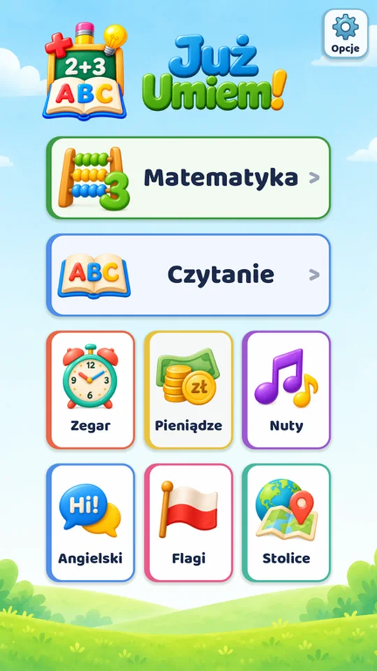
Wiele aplikacji dla dzieci walczy o ich uwagę: błyski, nagrody za każde dotknięcie, mechaniki, od których trudno się oderwać. „Już umiem!” działa inaczej.
Spokojny ekran, duże litery i cyfry. W trakcie zadań nic nie miga i nie odciąga uwagi, na ekranie jest tylko to, czego dziecko się uczy.
Nie ma tu wirtualnych nagród do zbierania, serii dni do podtrzymania ani sztuczek, które mają zatrzymać dziecko przy ekranie jak najdłużej. Lekcja się kończy i telefon można odłożyć.
Aplikacja jest pomyślana do nauki z rodzicem albo pod jego okiem. Ekran postępów pokazuje, co dziecko już umie i nad czym warto jeszcze popracować.
Lekcje zaczynają się na poziomie przedszkolaka i rosną razem z dzieckiem. Dla młodszych dzieci aplikacji nie projektowaliśmy, ale to Ty najlepiej znasz swoje dziecko.
„Już umiem!” to nie produkt, który kupuje się raz i zapomina. Aplikację cały czas rozwijamy i będziemy rozwijać dalej, razem z rodzicami i dziećmi, które z niej korzystają.
Nowe lekcje, poprawki i ulepszenia. W ramach subskrypcji dostajesz wszystkie nowe lekcje.
Każdą sensowną uwagę i propozycję uwzględnimy. Napisz, czego brakuje Twojemu dziecku: kontakt@juzumiem.app
Osiem działów, a w każdym lekcje od bardzo łatwych do trudniejszych. Dziecko idzie dalej we własnym tempie.
Dodawanie, odejmowanie, mnożenie i dzielenie, od „1 + 1” do działań do 100. Liczenie, porównywanie, ciągi, dziesiątki i jedności. Podpowiedź z kropkami.
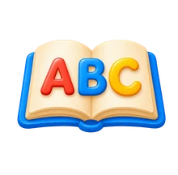
Litery, sylaby, wyrazy i zdania. Każdy tekst można odsłuchać i podzielić na sylaby. Wielkie albo małe litery, także pismo pisane.
Pełne godziny, wpół do, kwadranse, co 5 minut, każda minuta i godziny po południu.
Polskie monety i banknoty: liczenie groszy i złotówek, ile reszty i czy wystarczy pieniędzy.
Wartości nut i dźwięki gamy C-dur na pięciolinii i na klawiaturze pianina.
Pierwsze słówka z obrazkami i wymową: zwierzęta, jedzenie, kolory, liczby, ubrania, rodzina.
48 flag: od sąsiadów Polski po kraje z drugiego końca świata.
Stolice 48 krajów, od Warszawy po Canberrę, z nagranymi nazwami.
Duże przyciski, czytelne litery i lektor, który czyta zadania. Dziecko poradzi sobie samo.
Przesuń w bok, żeby zobaczyć więcej →
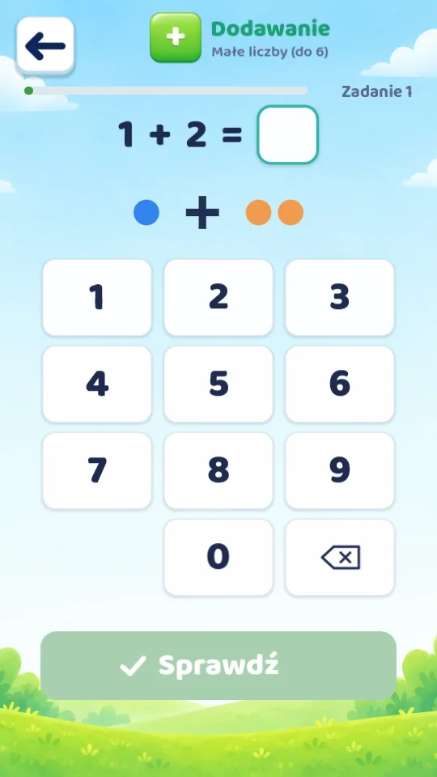
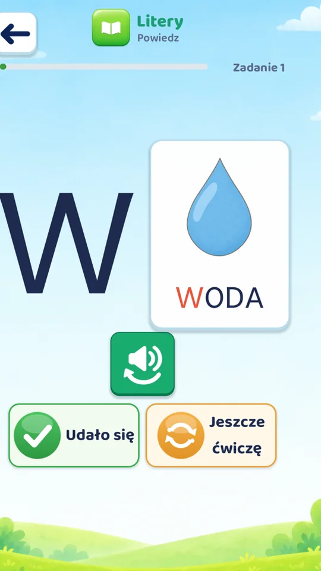
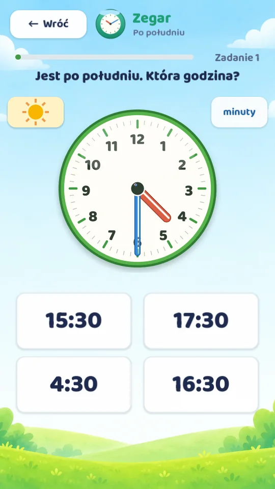
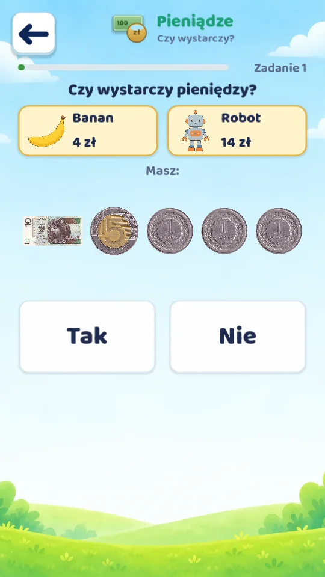
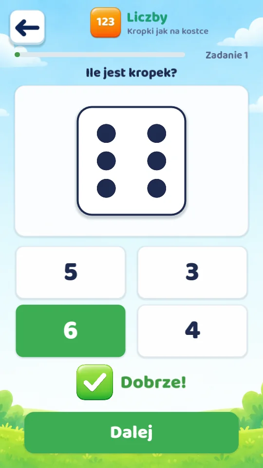
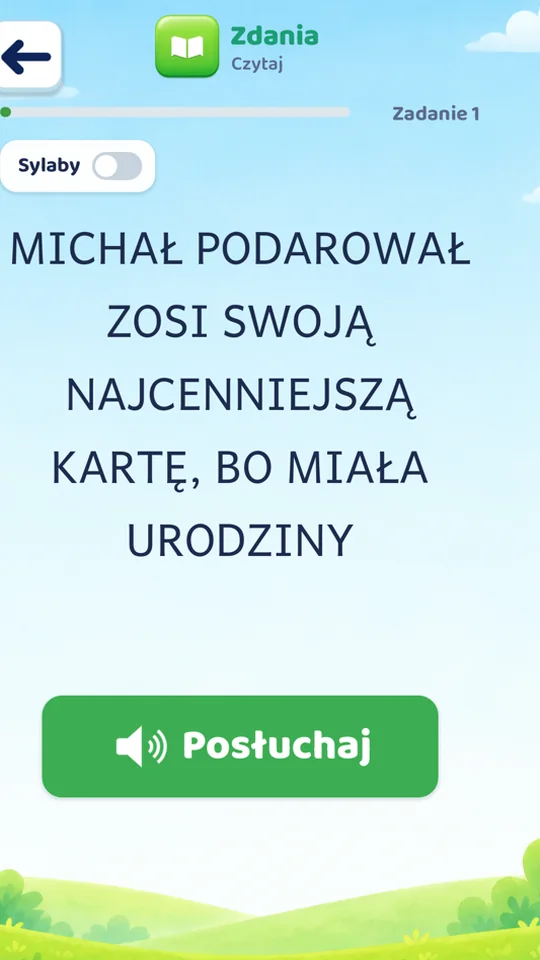
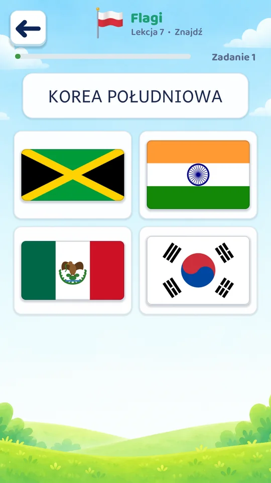
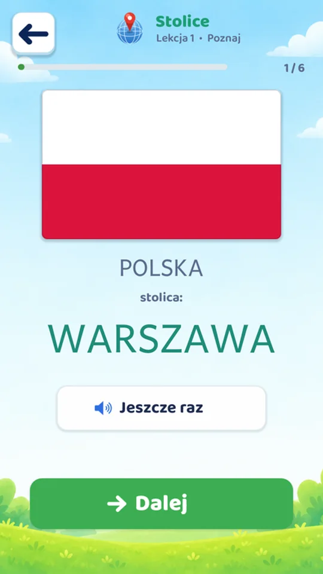
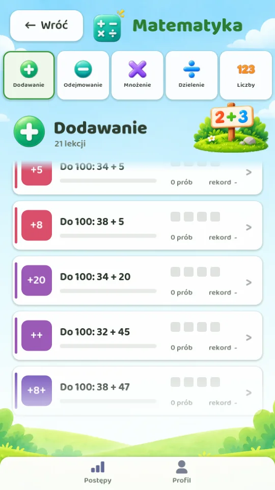
Zrobiliśmy aplikację, jaką sami chcemy dać dziecku do ręki.
Żadnych reklam, wyskakujących okienek ani zachęt do zakupów w trakcie lekcji.
Aplikacja nie zbiera żadnych danych, nie wymaga konta i nie prosi o dostęp do mikrofonu, aparatu ani lokalizacji. Polityka prywatności
Lekcje działają w samochodzie, w samolocie i na działce. Pełna wersja potrzebuje internetu tylko raz na 30 dni, żeby potwierdzić subskrypcję.
Liczby, litery, wyrazy, zdania i zadania są nagrane po polsku, więc dziecko nie musi jeszcze umieć czytać.
Ekran postępów pokazuje, które lekcje dziecko skończyło, jak mu idzie i ile ćwiczyło w ostatnim tygodniu.
Małe litery, pismo pisane i podział na sylaby można włączyć w opcjach, a lekcje zaczynają się od bardzo małych liczb.
Najpierw sprawdź za darmo, czy aplikacja spodoba się dziecku.
Pierwsze 3 lekcje w każdym dziale, bez limitu czasu.
Wszystkie lekcje za darmo przez tydzień. Możesz zrezygnować w dowolnej chwili w sklepie.
Cena na start, najdłużej przez pierwsze 6 miesięcy po premierze, potem 49,99 zł. Cały rok nauki za mniej niż 2,50 zł miesięcznie.
Płatność obsługuje Google Play albo App Store. Aktualną cenę zawsze widać w sklepie przed zakupem. Szczegóły w regulaminie.
Nie ma tu Twojego pytania? Napisz na kontakt@juzumiem.app.
Dla dzieci w wieku 4–12 lat. Dla młodszych dzieci jej nie projektowaliśmy. Pierwsze lekcje w każdym dziale są bardzo łatwe (dodawanie do 5, pierwsze litery), a kolejne coraz trudniejsze: działania do 100, mnożenie i dzielenie, czytanie zdań, zegar co do minuty, stolice świata.
Nie. Lektor czyta na głos liczby, litery, wyrazy, zdania i polecenia, więc z aplikacji może korzystać przedszkolak.
To normalne pytanie i dobrze, że dziecko je zadaje. Oto kilka sposobów, które działają bez nagród i bez kar:
Aktualizacje wychodzą najrzadziej co 2 tygodnie: nowe lekcje, poprawki i ulepszenia. W ramach subskrypcji dostajesz wszystkie nowe lekcje.
Napisz na kontakt@juzumiem.app. Czytamy każdą wiadomość, a każdą sensowną uwagę i propozycję uwzględnimy w kolejnych aktualizacjach.
Pierwsze 3 lekcje w każdym dziale są za darmo na zawsze. Pozostałe odblokowuje subskrypcja roczna, która zaczyna się od 7 dni za darmo.
Tak. Internet jest potrzebny tylko do pobrania aplikacji, zakupu subskrypcji i raz na 30 dni do jej potwierdzenia. Darmowe lekcje działają zawsze.
Nie. Nie ma reklam, kont ani narzędzi śledzących, a aplikacja nie prosi o dostęp do mikrofonu, aparatu czy lokalizacji. Szczegóły w polityce prywatności.
Tak, aplikacja wychodzi jednocześnie na Androida oraz na iPhone'a i iPada.
[odpowiedź do uzupełnienia]
[odpowiedź do uzupełnienia]
[odpowiedź do uzupełnienia]
[odpowiedź do uzupełnienia]
[odpowiedź do uzupełnienia]
Jak anulować subskrypcję, przenieść ją na nowy telefon albo włączyć małe litery: zobacz Pomoc.